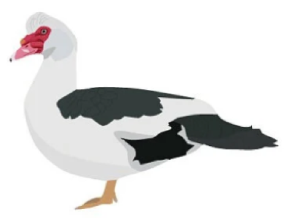

10 incríveis e diferentes espécies de patos pelo mundo


Abacot Ranger
O Abacot Ranger é uma raça de pato doméstico, inicialmente conhecido como Hooded Ranger e como Streicherente ('Ranger Duck', na Alemanha). Uma raça utilitária, originalmente desenvolvida para ovos e carne, é hoje popular para exposição e produção de ovos.

Rouen
O Rouen é uma raça pesada de pato domético. Rouens são criados principalmente para carne, exposição ou como patos de uso geral. Como não são poedeiras prolíficas, os patos de Rouen são mais comumente criados por sua carne.

Muscovy ou Almiscarado
O pato almiscarado é um pato nativo das Américas, desde o Vale do Rio Grande, no Texas e no sul do México, até a Argentina e o Uruguai. Os patos almiscarados selvagens são encontrados na Nova Zelândia, Austrália e na Europa Central e Oriental. Pequenas populações reprodutoras e selvagens também se estabeleceram nos Estados Unidos, particularmente na Flórida, Louisiana, Massachusetts, na Grande Ilha do Havaí, bem como em muitas outras partes da América do Norte, incluindo o sul do Canadá.
Cayuga
O Cayuga é uma raça americana de pato doméstico. Foi introduzido na região de Finger Lakes, no estado de Nova York, por volta de 1840, e recebeu o nome do povo Cayuga daquela área. Até os últimos anos do século XIX, foi o principal pato criado para produção de carne nos Estados Unidos. No século XXI é mantido principalmente para ornamentação. A plumagem é preta com luzes verde-besouro iridescentes.

Bali
O Pato Bali (também conhecido como Pato com Crista Balinês ou Pato Corredor com Crista) é uma raça leve de pato domesticado criado principalmente para decoração ou como animal de estimação, embora sejam boas poedeiras. É semelhante ao Pato Corredor Indiano, diferindo apenas por possuir uma crista no topo da cabeça.

Ancona
O Ancona é uma raça de pato doméstico, caracterizada por um padrão incomum e variável de plumagem de cores quebradas. Não está claro se é originário do Reino Unido ou dos Estados Unidos. Não é reconhecido ou listado pela Associação Americana de Aves, pela Entente Europeia de Avicultura e Cunicultura ou pelo Clube de Aves da Grã-Bretanha.
Pekin ou Pequim
O Pequim ou Pequim Branco é uma raça americana de pato doméstico, criada principalmente para obter carne. Deriva de aves trazidas da China para os Estados Unidos no século XIX, e agora é criada em muitas partes do mundo. É frequentemente conhecido como Pequim Americano para distingui-lo do Pequim Alemão, uma raça distinta e separada que deriva da mesma linhagem chinesa, mas tem criação diferente. Muitos desses patos foram criados em Long Island, Nova York, no final do século XIX e início do século XX, de onde a raça derivou o nome Long Island Duck.
Saxony
O Saxony (alemão: Sachsenente) é uma raça alemã de pato doméstico. Foi criado na Saxônia na década de 1930, mas por causa da Segunda Guerra Mundial foi reconhecido apenas em 1957. É uma raça de dupla finalidade, criada tanto para os ovos quanto para a mesa.
Indian Runner ou Corredor Indiano
Os corredores indianos são uma raça de pato doméstico. Eles ficam eretos como pinguins e, em vez de bambolear, correm. Eles foram criados nas ilhas indonésias de Lombok, Java e Bali. Esses patos não voam e raramente formam ninhos e incubam seus próprios ovos. Eles correm ou caminham, muitas vezes deixando cair seus ovos onde quer que estejam. A raça chegou ao mundo ocidental no século XIX; desde então, eles foram criados para ter uma grande variedade de cores.
Blue Swedish ou Azul Sueco
O Blue Swedish ou Azul Sueco é uma raça sueca de pato doméstico. Originou-se no antigo domínio da Pomerânia sueca (agora no noroeste da Polônia e no nordeste da Alemanha) e está documentado lá desde 1835. É muito semelhante ao pato da Pomerânia da mesma área geral, diferindo principalmente nas penas primárias brancas.